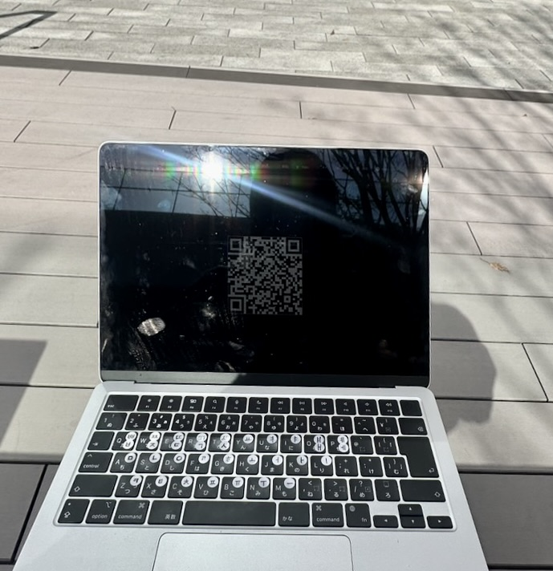
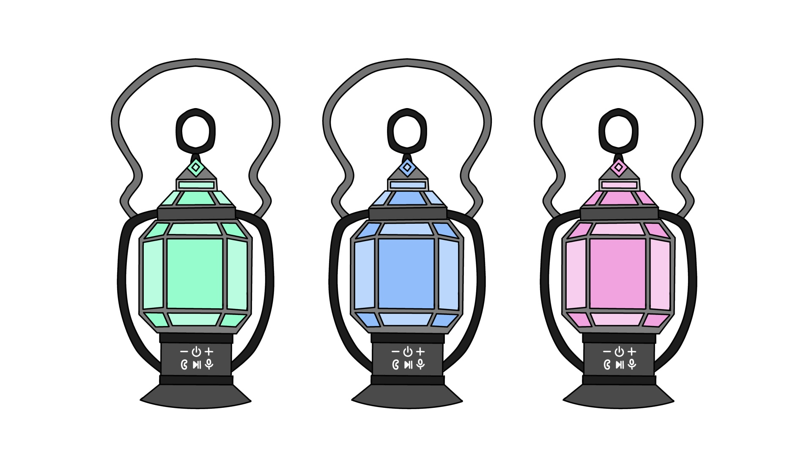

1.IoTとは何か
IoTは "Internet of Things" の略で、「モノのインターネット」という意味。
みんなが普段使っているモノとインターネットが接続されて、情報のやり取りすることができる技術のこと。
スマートフォンやスマートウォッチ、家電製品、防犯装置などとインターネットがつながって、データを送受信することができる。
それによって遠く離れた場所からデバイスをコントロールしたり、デバイス同士が情報を共有したりすることが可能になる。
例）
・家の外からでもスマートフォンで家の温度を調節できる。
・家の外からでもスマートフォンで冷蔵庫の中身を確認できる。
・家にいなくてもスマートフォンでカーテンの開閉ができる。
2.実験した動画をYoutubeにあげて、自分のHPで見れるようにしておく

・8階の教室にあるマイコンボード（Arduino）を遠くからでも光らせられることができるのかを実験するために
1階のキャンパスの外に出たところから光らせることができるか試してみた。
3.IoT(遠隔操作)で何ができそうか？グループワークした内容（ポストイット画像）

4.IoT(遠隔操作)で何ができそうか？自分で考えたアイディア（スケッチ）

・ランタンとスピーカーが一体になっているもの。
→ 『スピーカー』遠隔で音楽をかけることができる。
→ 『ランタン』スマホでランタンの光の強さや色を調節ができる。